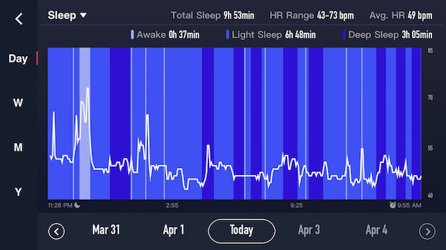
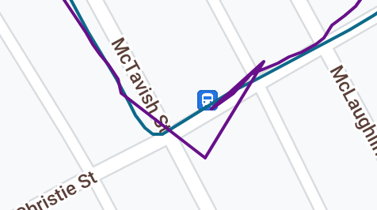
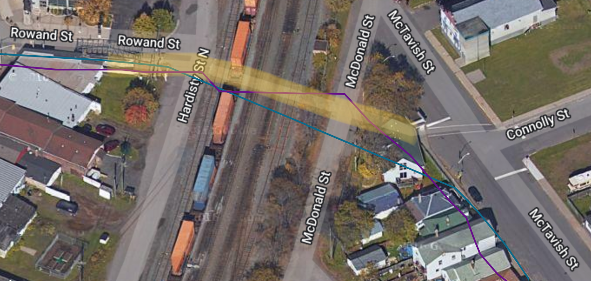

Running watch: Corox Apex vs. Apple Watch
Published 2022-04-02, updated 2022-04-02
I just bit the bullet and finally replaced my Apple Watch Series 3 with a Corox Apex 42mm. My primary motivations for the upgrade were:
- Battery life (66% of battery consumed during an 1:45 run is no bueno, especially when I have dreams of ultras)
- Dedicated running watch features, such as structured workouts (e.g. intervals), more accurate realtime pace info, …
- A few weeks before I updated, I found an absolutely incredible Apple Watch app called WorkOutDoors that basically gives your Apple Watch all the basic features of dedicated running watches (and then some), including structured workouts, fully configurable spoken and/or on-screen pace/HR/distance/whatever alerts, vector maps…if the battery life isn’t an issue for you, this may be all you need.
- More accurate HR monitoring — the Apple Watch is actually pretty good for this I think[1], except mine had recently started giving me totally bogus data.
After comparing a handful of different watches I ended up choosing between the Garmin Fenix 7s or the Coros Apex 42mm. Both have great battery life and a slim form factor with an understated aesthetic. I was really tempted to go with the Fenix due to a few additional features (HillClimb, music, ApplePay, stress tracking, Body Battery), as well as Garmin’s much more proven and established ecosystem. However, the Fenix was $420 CAD more than the Apex, and also lacked some features of the Apex, notably running power.
In the end I ended up going with the Coros mostly due to the price difference, and I think I made the right choice.
Table of Contents
The Good
Form Factor
The size of the 42mm Apex couldn’t be more perfect for me. At only 11.75mm thick (Fenix 7s: 14.1mm, Apple Watch 3: 11.4mm), it easily slips inside a shirt cuff. Although it’s a tiny bit thicker than my 38mm Apple Watch, it seems to get caught on sleeves less easily. I have pretty small wrists (16cm) and I hate the look of comically huge watches. The 42mm is perfect:

Build Quality
Great. Feels very solid despite its light weight (49 grams with band, vs 63 grams for the Fenix 7s and 55 grams for the 38mm Apple Watch Series 3).
Battery Life
Very very good. Compared to my Apple Watch, which went from 100% to 34% during an hour and 45 minute run, my Apex is currently at 34% battery and I last charged it eight days ago, and in those eight days I’ve record 5 hours and 47 minutes of running.
At this rate I should get about eleven days between charges. Coros claims 24 days of “smart watch” life, which is probably accurate, but it’s important to note that of course that doesn’t include any workouts. According to the battery info (which is a slick feature as well), my workouts have consumed 40% of my battery usage over the past eight days (backlight: 45%, daily HR monitoring: 14%).


Interface
I really like the interface on the Coros. Compared to fumbling through apps on the watch, starting a run on the Coros takes just two button presses: a press of the crown to access the workout menu, and another press to start the selected activity. Since it doesn’t rely on (or even have) a touch screen, it’s also much easier to operate with gloves during winter running than the Apple Watch.
I don’t have any hands-on experience with Garmins, but just from looking at my brother-in-law’s Garmin Instinct, which seemed to be a mystifying array of menus, functions, and shortcuts. I’m sure it makes sense once you learn it, but by contrast the Apex is quite intuitive. From the main screen, you have basically three options: press the crown to start a workout, turn the crown to scroll through the various info displays (running performance, fatigue, recovery, daily stats, heart rate history, elevation history, air pressure history, temperature histoy, sunrise/sunset info, and notifications), or press the “back” button to access everything else (alarm, timer, stopwatch, settings, navigation, etc).
I was a little bit wary about the crown (versus dedicated buttons on other watches), especially after reading critiques about it, and this was a large part of my initial hesitation about getting the Coros vs Garmin, but it’s mostly fine. Buttons would definitely be easier to manipulate during a hard run, but…whatever. It’s fine.
The Meh
No simultaneous navigation and structured workout
Although the Apex does not have maps, it does have navigation. You can import a GPX file or sync a route from a third-party platform (e.g. Strava, Komoot), and the watch will show your route as a 2D line on the screen and your current position as a little arrow (i.e. “breadcrumb navigation”). If you’re running a trail race and you have a sharp turn coming up, it will show you where you need to turn.
It also has, as mentioned earlier, structured workouts. You can create your own workouts in the app (e.g. warm up at 6:00 - 6:30 for 15 minutes, run 4:26 - 4:39 for 1.6k, recovery jog for three minutes, repeat six times, cool down for 15 minutes) or sync a plan from a third-party platform (e.g. TrainingPeaks).
However, you can not navigate a route and follow a structured workout at the same time; it’s one or the other. This is a bit of a bummer for me as I mostly run around the city, I like to plan out detailed routes in advance with the correct distances, and it can be difficult to remember what my turns are while I’m running.
I’m hopeful that this is improved in a future update.
Backlight
The screen is always on, which is a very welcome change coming from an Apple Watch 3. With the Apple Watch, especially running in the winter with gloves when you can’t activate the touch screen, you find yourself making an exagerating “I’m raising the watch to my face” motion to trigger the screen to come on (which doesn’t always work) when you want to take a look at your pace or heart rate. Much nicer being able to simply glance down at your wrist to check on your pace.
However, while the screen is perfectly visible in direct light, it suffers in shade, dark rooms, in a car, etc. It will trigger the backlight when you raise the watch to look at it (same motion as with the Apple Watch), however by default this only happens during “night-time” hours (except for when it detects that you’re asleep). You can change it to activate any time, but this will seriously impact your battery life.
Pressing either button on the watch will trigger the backlight any time of day, so that does help. A photosensor so that it triggers the backlight whenever it’s dark, not just during night time hours, might be nice. I’m not sure how other watches handle this.
Newer Coros models (Apex Pro/Vertix/Vertix 2/Pace 2) also have a “night mode” for running at night, in which the backlight is permanently on but at a much reduced brightness. I haven’t run with the Apex at night yet, but I imagine this would be a very welcome feature.
Sleep Tracking
The sleep tracking seems to be accurate enough, but it doesn’t give you any summary of your sleep — it just gives you a graph showing light sleep, deep sleep, awake, and heartrate.

Garmins, on the other hand, will give you a nice one sentance summary like “Last night’s sleep was deep enough to recharge you for the coming day.”
I’m sure the Coros sleep data feeds into their other metrics like recovery and fatigue, but it’s not clear exactly how.
The Bad
Heart Rate accuracy
The heart rate accuracy is not great, and seems to read significantly low. This seems like a problem since presumably a lot of the other analytics Coros provdes, like race predictions, fatigue, training load, etc, is based on it. See the heart rate comparison below for details.
Accuracy Comparison
I’ve done some rudimentry comparison of HR and GPS accuracy by wearing both the Coros and the Apple Watch simutaneously. I’m not pretending to be anywhere near as rigorous as DC Rainmaker’s excellent comparisons.
All comparison graphs made using DC Rainmaker’s Analyzer tool.
GPS Accuracy
The Coros definitely wins here (Coros in teal, Apple Watch in purple). My Apple Watch 3 regularly does weird things like this at corners:

…and weaves on straight courses:

Here I went through an underground tunnel (underground section highlighted yellow):

The Coros learns your stride length, and uses dead reckoning to plot your course when GPS is weak. It appears to have done a fairly good job at this, currectly reading the small turn underground. The Apple Watch doesn’t know what to do.
Arguably the most important aspect is total distance, and surprisingly both watches agree on this to within a 10 meters after a 15.8k run. I’m not sure how that is, with all the extra distance the Apple Watch must have recorded with the glitches at corners.
Heart Rate Accuracy
I’m not totally sure what to make of this yet, but the heart rate accuracy on the Coros seems not great. Immediately after starting to run with the Coros, it seemed to me that it was reading significantly lower than my Apple Watch, so I started wearing both on runs for comparison.
On my first run with them together–15.8k–the Coros gave me an average HR of 142bpm while the Apple Watch gave me an average of 162bpm. Optical HR sensors are never perfect, but an average difference of 20bpm is way more than you would expect.
Comparison below (Coros in teal, Apple Watch in purple):

I suspected that the Coros was reading low and the Apple Watch was reading high, so the next step was to add a third sensor into the comparison. I went with a Polar OH1, because according to DC Rainmaker’s comparisons, it’s one of the most accurate optical sensors he’s tested.
However, the first test was mystifying. My Apple Watch again read much higher than my Coros–this time 30bpm higher on average! This was a 4k run at an easy pace, so the Apple Watch was certainly wrong here. The Coros and the Apple Watch, despite their huge difference, at least followed the same general pattern. The Polar, on the other hand, was all over the place, including a bizarre peak and dip in the middle that I’m pretty sure did not happen.

Note that while the graph shows an average of 155.28bpm for the Apple Watch, the average was actually 170bpm. The Apple Watch didn’t start reading until 2:27 into the run, and DC Rainmaker’s analyzer tool reads those missing data points as zero, significantly lowering the average.
The third test, a faster 6k tempo run with 10 minute warm up and 10 minute cool down, made a lot more sense. Unfortunately for me(and for the Coros), it showed that the Apple Watch was significantly more accurate:

This time the Polar OH1 and the Apple Watch 3 agreed almost perfectly, and also matched reality. They show lower heart rates during my warm up and cool down, and higher during the tempo pace in the middle. The Coros, on ther hand, pretty much just reads 160bpm all the way across. At least they all agree on the average.
I’m not sure what to make of the difference between this run and the previous run. I did update the firmware on both the Coros and the Polar between these two runs, and also wore the Polar just a bit looser, so maybe one of those explain the difference in accuracy.
Anyway, more testing is needed, but so far the accuracy on the Coros seems disappointing.
Comments
Got any thoughts on the Apex or other watches? Email me at jg@justus.ws
Footnotes
DC Rainmaker considers the Apple Watch 4 one of the most accurate optical HR sensors available, even pitted against armband sensors. He hasn’t evaluated the Series 7 yet, but has said that the Series 6 seems to be very close to the Series 4. ↩︎